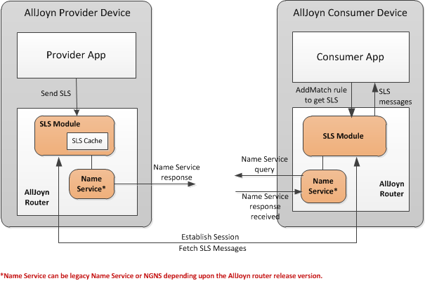
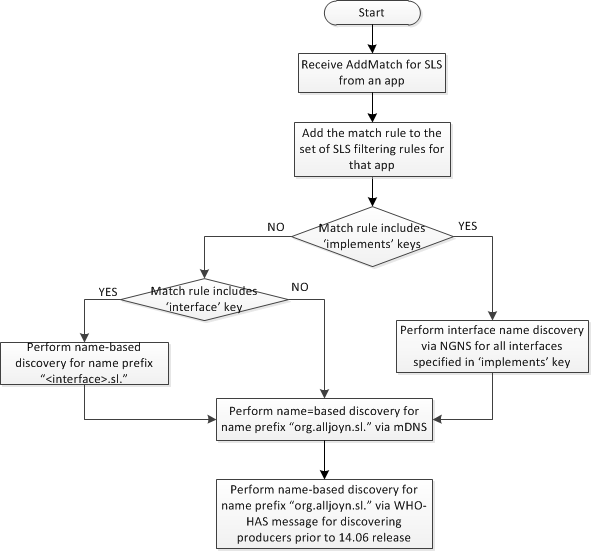
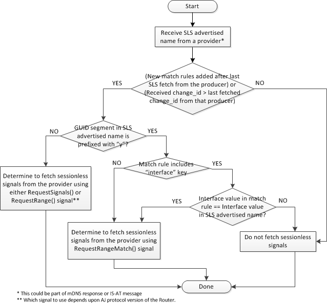
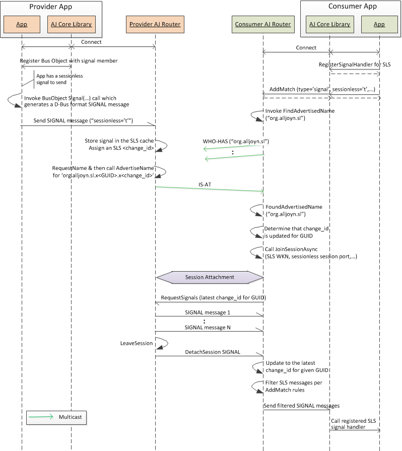
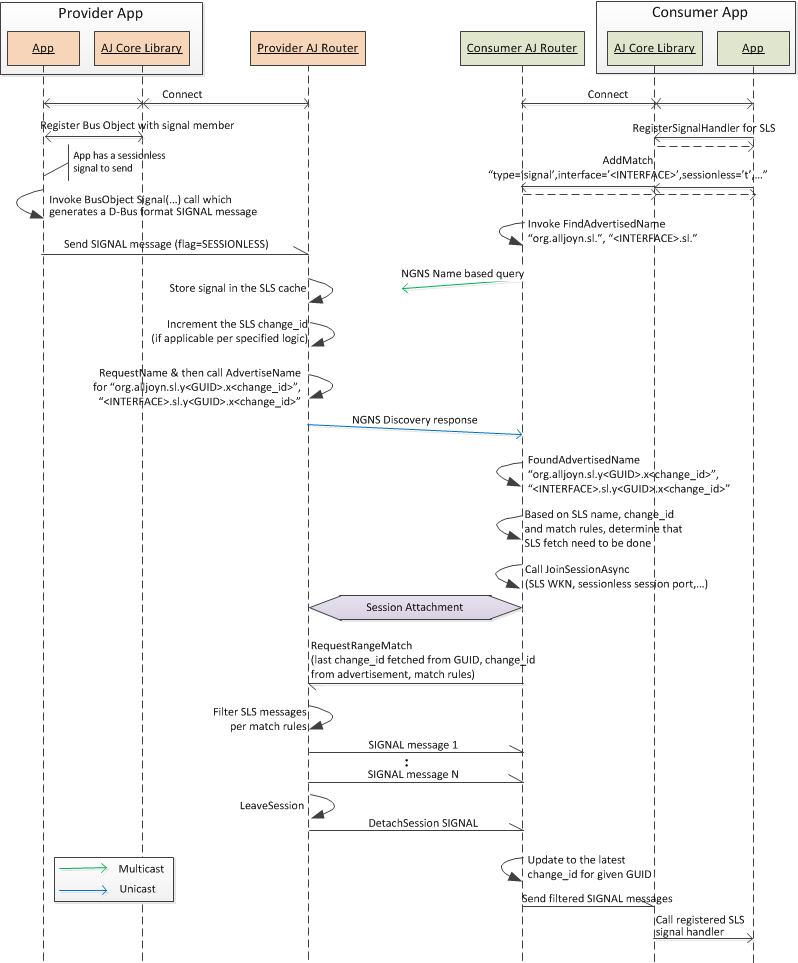

Sessionless Signal
Overview
The sessionless signal is an AllJoyn™ feature that enables broadcasting of signals to all reachable nodes in the AllJoyn proximal network. This is different than the session-based signals described in Data Exchange, where signals are sent only to participants connected over a given session or multiple sessions (for session broadcast signals) based on sessionId/destination based routing.
Sessionless signals are logically broadcast signals and any app on the AllJoyn proximal network interested in receiving sessionless signals will receive all sessionless signals sent by any other app on that network. The AllJoyn system design refers to sessionless signals as logically broadcast because signals themselves are not broadcast/multicast, only an indication for signals is sent over multicast to all the nodes on the network. Applications do not have to be connected over sessions to receive sessionless signals, however, the AllJoyn router underneath must establish a session to fetch these signals based on the indication received. Applications can specify match rules (via AddMatch) to receive a specific set of sessionless signals and the AllJoyn router filters out signals based on those match rules.
The following figure captures the high-level architecture for the sessionless signal on the provider and consumer sides. The AllJoyn router supports a logical SLS module that implements sessionless signal logic. The SLS module makes use of the Name Service to advertise and discover sessionless signals using a sessionless signal-specific well-known name.

Figure: Sessionless signal architecture
After AllJoyn router startup, the SLS module executes the following steps to prepare itself for sending and/or receiving sessionless signals.
- Create an object implementing "org.alljoyn.sl" interface which is the interface used between two AllJoyn routers to exchange sessionless signals.
- Register signal handlers to receive signals from "org.alljoyn.sl" interface.
- Bind a well-known sessionless signal session port 100 to support incoming requests to fetch sessionless signals.
The consumer app interested in receiving sessionless signals registers a match rule with the AllJoyn router to receive sessionless signals. As a result, the SLS module initiates discovery for sessionless providers via the Name Service (either the legacy Name Service or NGNS based on the router version).
On the provider side, the app sends a sessionless signal to the AllJoyn router. The SLS module stores the signal in a local message cache. The provider side sessionless signal generates a sessionless signal-specific well-known name and advertises that over AllJoyn network.
Upon discovering the sessionless signal provider, the consumer AllJoyn router establishes a session with the provider side AllJoyn router over the well-known session port for sessionless signals. Once the session is established, the consumer SLS module fetches sessionless signals via the org.alljoyn.sl interface.
The following sections detail the provider and consumer sessionless signal-related behavior.
Sessionless signal enhancement in the 14.06 release
Prior to the 14.06 release, the consumer side SLS module provides the functionality of requesting sessionless signals by matching certain filtering criteria specified by the AddMatch rule. The consumer fetches sessionless signals from all the providers and applies the AddMatch rules to filter received sessionless signals before passing these to interested applications.
The sessionless signal design in the 14.06 release was enhanced to enable a consumer application to request sessionless signals from provider applications supporting certain AllJoyn interfaces. For example, a Lighting Controller app can request Announcement sessionless signals only from those provider apps that implement the org.alljoyn.LightBulb interface.
The following key sessionless signal enhancements made to achieve this functionality:
- The sessionless signal advertised name was enhanced to add
information from the header of the sessionless signal. Consumers use this to fetch sessionless signals only from those providers that are emitting signals from specified in the consumer side match rules. Multiple sessionless signal names are advertised, one for each unique interface in the sessionless signal cache. - The match rule definition for AddMatch has been extended to add a new 'implements' key that can be used to indicate the desire to receive the Announcement sessionless signal only from applications implementing certain AllJoyn interfaces as specified in the application's Announcement signal.
Sessionless signals are only fetched from those providers that support interface details specified in the match rules. The AddMatch match rules are passed to the providers to filter signals based on those match rules.
Sessionless signal end-to-end logic
The sessionless signal end-to-end logic consists of the following aspects, which are detailed in the sections below.
- The provider caches signals and advertises the availability of signals.
- The consumer discovers sessionless signal providers.
- The consumer fetches sessionless signals from a provider.
Provider caches signals and advertises availability
On the provider side, the app sends a signal to the AllJoyn router with the SESSIONLESS flag set. The SLS module in the provider inserts the signal into its sessionless signal cache. The cache entry uses the combination of (SENDER, INTERFACE, MEMBER, and PATH) header fields of the signal as the key.
Subsequent sessionless signals sent to the AllJoyn router with the same (SENDER, INTERFACE, MEMBER, and PATH) header fields overwrite the already cached sessionless signal.
The provider AllJoyn router assigns a change_id for sessionless signals. The change_id is used to indicate updates to sessionless signals to consumers on the AllJoyn network. Each sessionless signal cache entry includes (SLS signal, change_id) tuple. The change_id is incremented by the provider only after a new signal is inserted into its cache and a consumer has requested signals from the provider since the last time the change_id was incremented.
The app may remove an entry from the provider's cache by calling the CancelSessionlessMessage method of the org.alljoyn.Bus interface of the /org/alljoyn/Bus object. The entry being removed is specified by the serial number of the signal. The change_id is not incremented when the provider removes a signal from its cache. The contents of the cache, including the associated change_ids, determine what the provider will advertise.
Prior to the AllJoyn 14.06 release, the SLS module requests and advertises the following sessionless signal well-known name:
- "org.alljoyn.sl.x
.x "
where:
- GUID is the GUID of the AllJoyn router
- change_id is the maximum change_id in the sessionless signal cache.
Starting with the AllJoyn 14.06 release, the SLS module requests and advertises the following sessionless signal well-known names:
- "org.alljoyn.sl.y
.x "
where:
- GUID is the GUID of the AllJoyn router
-
change_id is the maximum change_id in the SLS cache.
-
"
.sl.y .x "
where:
- INTERFACE is the value of the INTERFACE header field of the signal
- GUID is the GUID of the AllJoyn router
- change_id is the maximum change_id for signals in the sessionless signal cache having the same value of the INTERFACE header field.
At most, one well-known name is requested and advertised for each unique INTERFACE header field value in the sessionless signal cache.
The following figure shows the provider side SLS module logic prior to the AllJoyn 14.06 release.

Figure: Provider SLS module logic (prior to the AllJoyn 14.06 release)
The following figure shows the provider side SLS module logic introduced in the AllJoyn 14.06 release.

Figure: Provider SLS module logic (introduced in the AllJoyn 14.06 release)
Consumer discovers sessionless signal providers
On the consumer side, the app registers an interest in a sessionless signal by calling the D-Bus AddMatch method.
NOTE: The D-Bus AddMatch method is part of the org.freedesktop. The D-Bus interface and is implemented by the /org/freedesktop/DBus object.
The match rule includes "sessionless='t'" to indicate registration for a sessionless signal, along with any other key/value pairs for filtering signals.
Prior to the AllJoyn 14.06 release, the SLS module starts the name-based discovery process to discover the SLS WKN prefix "org.alljoyn.sl." after receiving the first sessionless match rule. When the last match rule is removed by an app connected to the AllJoyn router, the SLS module cancels discovering the SLS WKN prefix.
Starting with the AllJoyn 14.06 release, the sessionless signal logic on the consumer side was enhanced to enable an application requesting sessionless signals from providers implementing certain AllJoyn interfaces. A new 'implements' key was added to the AddMatch method to achieve this. The 'implements' key specifies an AllJoyn interface that should be implemented by the sessionless signal provider. Multiple 'implements' key/value pairs may be specified in a single match rule. These are treated as a logical AND when discovering sessionless signal providers. In the current implementation, the 'implements' key is only applicable for receiving the Announcement sessionless signal. An AddMatch that includes the 'implements' key should always include "interface= org.alljoyn.About".
The following figure shows the consumer logic for discovering sessionless signal providers implemented in the 14.06 release.

Figure: Consumer logic for discovering sessionless providers (introduced in the AllJoyn 14.06 release)
If the AddMatch includes the 'interface' key but no 'implements'
key, the SLS module performs name-based discovery to discover
the name prefix "
If the AddMatch includes one or more 'implements' keys, the SLS module performs interface name discovery via the NGNS to discover providers implementing interfaces specified by the 'implements' key. The SLS module also performs a name-based discovery for name prefix "org.alljoyn.sl." both via mDNS and using the WHO-HAS message. The latter is intended to discover any sessionless signal providers prior to the 14.06 release. Name-based discovery over mDNS is performed to catch unsolicited mDNS responses from providers for new/updated sessionless signals.
The app unregisters interest in a sessionless signal by calling the RemoveMatch method with a previously added match rule. When the last sessionless signal match rule is removed, the SLS module stops sessionless signal-related discovery, including both name-based and interface name discovery.
Consumer fetches sessionless signals from a provider
After discovering a provider, the consumer SLS module determines if it needs to fetch sessionless signals from the provider based on the consumer's match rules and the change_id of the provider in the advertisement. The consumer SLS module keeps track of last acquired change_id for every provider GUID it has discovered via the sessionless signal advertised name. The sessionless signal fetch logic and the state maintained by the consumer for each provider was modified in the 14.06 release. The fetch logic functionality differences are described below.
- Prior to the 14.06 release, the consumer SLS module maintains
the List
information for discovered providers. The consumer SLS module fetch sessionless signals if an updated change_id is received from the provider as part of the sessionless signal advertised name. - Starting with the 14.06 release, multiple sessionless signal
advertised names can be received from a given provider.
In addition, the associated change_id can be different for
each of those sessionless signal advertised names. The consumer
SLS module maintains the List
for discovered providers. It also keeps track of the match rules that have been applied for a given provider.
The following figure captures the consumer sessionless signal fetch logic implemented in the 14.06 release.

Figure: Consumer logic to determine sessionless signal fetch (introduced in the 14.06 release)
The consumer SLS module receives the sessionless signal advertised name from a provider. The sessionless signal name can be received via multiple means:
- Solicited mDNS response over unicast as a result of an mDNS query
- Unsolicited mDNS response over multicast
- IS-AT multicast message (solicited or unsolicited).
The consumer checks if any new match rules have been added after the last fetch from the provider or the received change_id in the sessionless signal name is greater than what was fetched previously from that provider.
If either condition is true, the consumer initiates a sessionless signal fetch from a legacy provider (prior to the 14.06 release) without further checks. This is determined by examining the GUID segment of the sessionless signal advertised name received from the provider:
- Prior to the 14.06 release, the GUID is prefixed with an "x".
- Starting with the 14.06 release, GUID is prefixed with a "y".
If the sessionless signal name is from a 14.06 release or later provider, the consumer performs further checks to determine if the sessionless signal fetch should be done with the provider.
Starting with the 14.06 release, the sessionless signal name also includes the interface value from the sessionless signal header. In this case, the consumer SLS module checks whether the interface specified (if any) in the match rule is the same as the interface received in the sessionless signal name.
- If yes, the consumer initiates a sessionless signal fetch with the provider.
- If no interface was specified in the match rule, the consumer initiates a sessionless signal fetch anyway because this constitutes a wildcard match.
In the 14.06 release, a new RequestRangeMatch() signal is defined as part of the org.alljoyn.sl interface. This signal is used to fetch a set of sessionless signals that matches any of the match rules specified in the RequestRangeMatch() signal. The consumer SLS module uses this signal to fetch sessionless signals from the 14.06 providers.
NOTE: The current implementation does a catchup fetch for new match rules before fetching new signals for updated change_id. This results in two fetches upon receiving the sessionless signal advertised name, however, this would be a rare occurrence because adding a new match rule and receiving a sessionless signal advertised name typically does not occur at the same time.
Whenever a new AddMatch rule is added for sessionless signals, the consumer SLS module triggers a catchup fetch with already known providers for the new match rule per the logic captured in Consumer fetches sessionless signals from a provider. For a catchup fetch, the RequestRangeMatch signal only includes the new match rule. If the new AddMatch includes an 'implements' key, the consumer SLS module performs discovery for providers implementing those interfaces.
The consumer schedules a sessionless signal fetch immediately for sessionless signal advertised names received in the solicited mDNS or IS-AT response messages. For sessionless signal advertised names received as part of the unsolicited mDNS or IS-AT response messages, the sessionless signal fetch is scheduled following a backoff algorithm as described in Sessionless signal fetch backoff algorithm.
The steps to fetch sessionless signals follow.
- The consumer SLS module joins a session with the sessionless signal advertised name and known SLS port (port=100).
- The consumer sends one of the signals defined in the
org.alljoyn.sl (
RequestSignals(),RequestRange(), orRequestRangeMatch())
to the provider over established session to fetch sessionless signals. - The provider receives the request signal, sends the requested sessionless signals and leaves the session.
For details of which signals the provider sends from its cache to the consumer, see the definition of these signals in org.alljoyn.sl interface.
The consumer receives the sessionless signals, and filters and routes them according to its match rules. The consumer SLS module maintains the information about the match rules applied and change_id fetched from the provider for future sessionless signal fetches.
Sessionless signal fetch backoff algorithm
After determining that it needs to fetch sessionless signals from a given provider as per the logic described above, the consumer SLS module attempts a join session with the producer to fetch sessionless signals. If the consumer's first join session attempt fails, it follows a backoff based retry logic to do the join session for the sessionless signal fetch from the provider. The SLS fetch logic adds random delays at different consumers to ensure that consumer requests for sessionless signals fetch are distributed over time for a given provider.
The Consumer SLS module follows a mix of linear plus exponential backoff retries for sessionless signals fetch. It supports a hybrid of first few linear backoff retries followed by some exponential backoff retries. The transition point between the linear and exponential backoff is configurable. The backoff interval is capped off to a maximum configurable value. Retries are performed for a total retry period R. Once the max backoff interval is reached, retries continue with the constant retry period (set to max backoff interval) until the total retry period R is elapsed.
The following configuration parameters have been added in the router config file: Linear to Exponential Transition Point (k) - Specifies the retry attempt after which backoff should become exponential. Max Backoff Interval Factor (c) - Specifies the multiplication factor for T (initial backoff time) to generate the max backoff interval. * Total Retry Period (R) - Specifies the total time period (in seconds) for which SLS fetch retry must be attempted.
The following figure shows an example SLS retry schedule with SLS retries happening at T, 2T, 3T, 4T, 8T, 16T, 32T, 32T, 32T,....

Figure: SLS fetch backoff schedule example
For every SLS retry attempt, the join session with the producer is delayed randomly between [0, retry interval] to make sure Consumer requests are distributed over time. For example in the figure above: The Consumer join session for 4th SLS fetch retry will be randomly delayed between [0, 4T] interval. The Consumer join session for nth SLS fetch retry will be randomly delayed between [0,16T] interval.
For the SLS fetch triggered as a result of solicited mDNS discovery responses, the join session request is not delayed randomly. In this case, the join session for SLS fetch is done immediately. The AllJoyn router will serialize such an SLS fetch if the max connections limit on the Consumer is reached.
Sessionless signal message sequences (prior to the 14.06 release)
Since the sessionless logic has changed quite a bit in the 14.06 release, separate SLS message sequences are captured prior to the 14.06 release and starting from the 14.06 release.
The following use cases detail sessionless signal logic scenarios prior to the 14.06 release:
- First sessionless signal delivery
- Another AddMatch done by the same app
- Another app requests sessionless signals
First sessionless signal delivery
The following figure shows the message flow for the use case for sending and receiving the first sessionless signal on the provider and consumer, respectively.
NOTE: The sessionless signal change_id is not carried in any of the sessionless signal messages. However, the provider AllJoyn router logic ensures that it only sends sessionless signal messages up to the change_id that was discovered by the consumer. When the JoinSession is done by the consumer, it uses the sessionless signal well-known name discovered from the IS-AT message. The change_id included in that well-known name provides the upper limit for the change_id for sending sessionless signals to the consumer.
A similar message flow is applicable for the use case when a subsequent sessionless signal is delivered. The main difference is that the provider updates the change_id, if applicable, as per the change_id update logic described above.

Figure: First sessionless signal delivery
The message flow steps are described below.
- Both provider and consumer apps connect to the AllJoyn router, and a unique name is assigned to the app endpoint by the AllJoyn router.
- The provider app registers its service object implementing an interface containing signal member with the AllJoyn core library.
- The consumer app registers a signal handler for the
sessionless signal by invoking the AllJoyn core library's
RegisterSignalHandlerAPI. - The consumer app invokes AllJoyn core library's
AddMatchAPI to add a rule for receiving sessionless signals. The API specifies a signal match rule with type='signal', sessionless='t' and other applicable parameters. - The AllJoyn core library invokes the AllJoyn router's AddMatch method to add the sessionless signal filtering rule at the AllJoyn router.
- The consumer AllJoyn router invokes
FindAdvertisedName()with the sessionless SLS WKN prefix "org.alljoyn.sl" to discover providers offering sessionless signals. - The consumer AllJoyn router sends a WHO-HAS message for "org.alljoyn.sl" prefix.
- The provider app has a sessionless signal to send. It invokes the BusObject Signal(...) call which generates an AllJoyn SIGNAL message with the sessionless flag set to true.
- The SIGNAL message is sent from the app to the AllJoyn router.
- The provider AllJoyn router stores the signal in the sessionless signal cache and assigns a new sessionless signal change_id number.
- The provider AllJoyn router generates a well-known name
for the sessionless signal with the latest change_id using
the format org.alljoyn.sl.x
.x . - The provider AllJoyn router does a RequestName for this
well-known name to reserve this name. It then calls the
AdvertiseNamemethod to advertise this name on the AllJoyn network. - The provider AllJoyn router sends out an IS-AT message with the generated sessionless signal well-known name.
- The consumer AllJoyn router receives the IS-AT message that passes the prefix matching for "org.alljoyn.sl". A FoundAdvertisedName signal gets generated for the the sessionless signal prefix.
- The consumer AllJoyn router compares its current change_id for the AllJoyn router GUID in the IS-AT message with the change_id received in the IS-AT message. It determines that the received change_id is different than the current change_id and it needs to get the new set of sessionless signals from the provider AllJoyn router.
- The consumer AllJoyn router invokes the
JoinSessionAsyncmethod to start a session with the provider AllJoyn router. It specifies the sessionless signal wel-known name and the sessionless session port among other parameters. This initiates a session attachment flow at the AllJoyn router level between the consumer and provider. - Once the session is established, the consumer AllJoyn router sends a RequestSignals signal to request the latest set of sessionless signals from the provider app. This signal includes the last acquired change_id for the GUID of provider AllJoyn router.
- The provider AllJoyn router sends SIGNAL messages for all sessionless signals added after the change_id provided in the RequestSignals message. The SIGNAL messages have destination as local endpoint of the consumer AllJoyn router.
- Once all SIGNAL messages have been sent, the provider AllJoyn router initiates a LeaveSession method for the connected session. This triggers sending a DetachSession SIGNAL message to the consumer AllJoyn router.
- After receiving the DetachSession signal, the consumer AllJoyn router knows that it has received all new sessionless signals from the provider AllJoyn router. It then updates its change_id for that GUID to the latest received change_id from the IS_AT message.
- The consumer AllJoyn router filters the received sessionless signal messages based on the registered AddMatch rules for the sessionless signals.
- The consumer AllJoyn router sends SIGNAL messages to the AllJoyn core library via callback. The AllJoyn core library in turn calls the registered signal handler for the sessionless signal.
Another AddMatch done by the app
A consumer app might invoke a subsequent AddMatch call for sessionless signals. Prior to the 14.06 release, this is interpreted as adding another rule for filtering future received sessionless signals.
- At the AllJoyn router, any future received SLS messages will be filtered based on the combined set of match rules.
- If there is a more restrictive rule which matches a small set of sessionless signals and there is another less restrictive rule which matches a larger superset of signals, AllJoyn router will always send larger superset of signals to the app.
NOTE: The AllJoyn router does not re-fetch sessionless signal messages associated with the existing change_id when a new match rule is added. The new match rule is applied to any future received messages. Starting with the 14.06 release, this behavior was modified and the SLS module initiates the sessionless signal fetch whenever any new match rule is added.
The following figure shows the message flow for the scenario where another AddMatch is done by the same app. Most of the steps are same as the first sessionless signal delivery. The main difference is that no FindAdvertisedName needs to be done for "org.alljoyn.sl" because discovery for the SLS WKN prefix was already initiated at the time of receiving first AddMatch for the sessionless signal and is already in progress.

Figure: Another add match done by the app
Another app requesting for sessionless signal
For the use case where multiple apps are connected to a
given AllJoyn router, each application can invoke the AddMatch
call to add match rules for sessionless signals with the AllJoyn
router. These AddMatch calls can be received at different times.
When the first AddMatch call is received from an app, the AllJoyn
router re-fetches the currently valid sessionless signals
from the already discovered providers for sending to that app.
The AllJoyn router uses the RequestRange signal to fetch the
current set of sessionless signals.
The following figure shows the message flow for the scenario when a subsequent app performs the first AddMatch for sessionless signals.

Figure: Another app requesting for sessionless signals
Sessionless signal message sequences (14.06 release)
In the 14.06 release, the sessionless signal logic was enhanced as described earlier. This section captures the sessionless signal message sequences with the enhanced logic. The following use cases are detailed:
- First sessionless signal delivery
- Sessionless signal delivery between a new consumer and a legacy provider
- Sessionless signal delivery between a legacy consumer and a new provider
- Subsequent AddMatch done by an app
First sessionless signal delivery
This use case defines when the first AddMatch is done by a consumer app to receive sessionless signals. The match rules specified in the AddMatch may or may not include the new 'implements' key. Both use cases are captured accordingly:
- AddMatch does not include 'implements' key
- AddMatch includes 'implements' key
AddMatch does not include 'implements' key
The following figure shows the message flow for sending and receiving the first sessionless signal for the use case when AddMatch does not include an 'implements' key/value pair.

Figure: First sessionless signal delivery (no 'implements' key in AddMatch)
The message flow steps are described below.
1. Both the provider and consumer apps connect to the AllJoyn router.
2. The provider app registers its service object implementing
an interface containing signal member with the AllJoyn core library.
3. The consumer app registers a signal handler for the sessionless
signal by invoking the AllJoyn core library's RegisterSignalHandler API.
4. The consumer app invokes the AllJoyn core library's
AddMatch API to add a rule for receiving sessionless signals.
The API specifies a signal match rule with type='signal',
interface='FindAdvertisedName
method with the SLS WKN prefix "org.alljoyn.sl." to discover
providers prior to the 14.06 release and SLS WKN "BusObject Signal(...) call which generates
an AllJoyn SIGNAL message with SESSIONLESS flag set to true.
9. The SIGNAL message is sent from app to the AllJoyn router.
10. The provider AllJoyn router stores the signal in the sessionless signal cache.
11. The provider AllJoyn router generates the following:
* A well-known name for the sessionless signal of the format
"org.alljoyn.sl.y
AddMatch includes the 'implements' key
The following figure shows the message flow for sending and receiving of the first sessionless signal for the use case when AddMatch includes one or more 'implements' key/value pair.
NOTE: Currently, the 'implements' key only applies to the Announcement sessionless signal. As a result, the AddMatch in this case must include "interface=org.alljoyn.About", which is the interface that emits the Announcement signal.
The AllJoyn router initiates interface name discovery via NGNS to find providers which implements the specified interfaces. Once those providers are discovered, the consumer AllJoyn router fetches the Announcement signals from those providers.

Figure: First sessionless signal delivery (with implements' key in AddMatch)
Sessionless signal delivery between a new consumer and a legacy provider
The following figure shows the message flow when a new consumer (14.06 release or later) received sessionless signals from a legacy provider (prior to the 14.06 release).

Figure: Sessionless signal logic between new consumer and legacy provider
Sessionless signal delivery between a legacy consumer and a new provider
The following figure shows the message flow when a legacy consumer (prior to the 14.06 release) is receiving sessionless signals from a new provider (14.06 release or later).

Figure: Sessionless signal logic between legacy consumer and new provider
Subsequent AddMatch done by an app
After the first AddMatch call to the AllJoyn router, applications can subsequently invoke other AddMatch calls to add more match rules for sessionless signals.
Starting from the 14.06 release, whenever an AddMatch call is invoked by any app, the SLS module takes steps to trigger fetch for sessionless signal messages. The logic is quite similar to the first sessionless signal delivery use case in First sessionless signal delivery. The additional step is to fetch sessionless signal messages from existing providers that match the specified filtering criteria for sessionless signals.
The consumer SLS module remembers the sessionless signal advertised name it has received from each provider. For the new AddMatch rule that doesn't include implements key, the consumer uses the match rule to find matching providers among existing providers and fetches sessionless signals from those providers.
The consumer SLS module performs the following steps.
- Perform interface name discovery for providers for any new 'implements' key/value pair specified in AddMatch. Fetch the sessionless signals from the discovered providers.
- Perform name-based discovery for "
.sl" for any new interface value specified in AddMatch, for which discovery was not already done. Fetch the sessionless signals from the discovered providers. - Fetch the sessionless signals from the already known providers if the sessionless signal name received from these providers match the filtering criteria specified in match rule.
org.alljoyn.sl interface
The org.alljoyn.sl interface is the AllJoyn interface between two AllJoyn routers used to enable the exchange of sessionless signals. org.alljoyn.sl interface signals lists the org.alljoyn.sl interface signals.
org.alljoyn.sl interface signals
| Signal name | Description |
|---|---|
| RequestSignals | Requests sessionless signals associated with change_ids in the range [fromId, currentChangeId], where currentChangeId is the most recently advertised change_id of the provider. |
| RequestRange | A signal for requesting sessionless signals associated with change_ids in the range [fromId, toId). NOTE: The "toId" is exclusive so a consumer should set toId= This signal appeared in version 6 of the AllJoyn protocol. |
| RequestRangeMatch | A signal for requesting sessionless signals associated with change_ids in the range [fromId, toId) that match any of the provided match rules. The "toId" is exclusive in this signal too. This signal appeared in version 10 of the AllJoyn protocol (associated with the 14.06 release). |
org.alljoyn.sl.RequestSignals parameters
| Parameter name | Description |
|---|---|
| UINT32 fromId | Start of change_id range. |
org.alljoyn.sl.RequestRange parameters
| Parameter name | Description |
|---|---|
| UINT32 fromId | Start of change_id range. |
| UINT32 toId | End of change_id range. |
org.alljoyn.sl.RequestRangeMatch parameters
| Parameter name | Description |
|---|---|
| UINT32 fromId | Start of change_id range |
| UINT32 toId | End of change_id range |
| ARRAY of STRING matchRules | Match rules to apply to the range. |